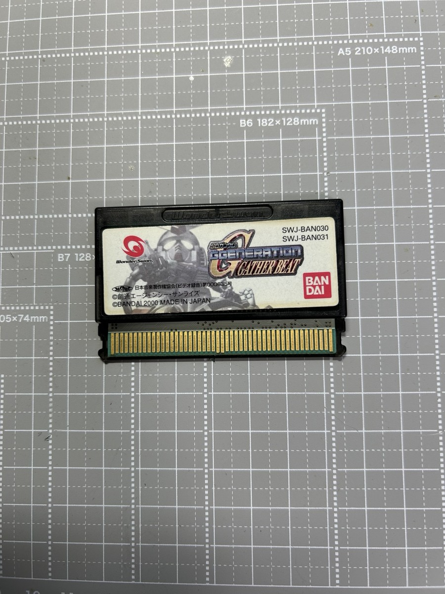
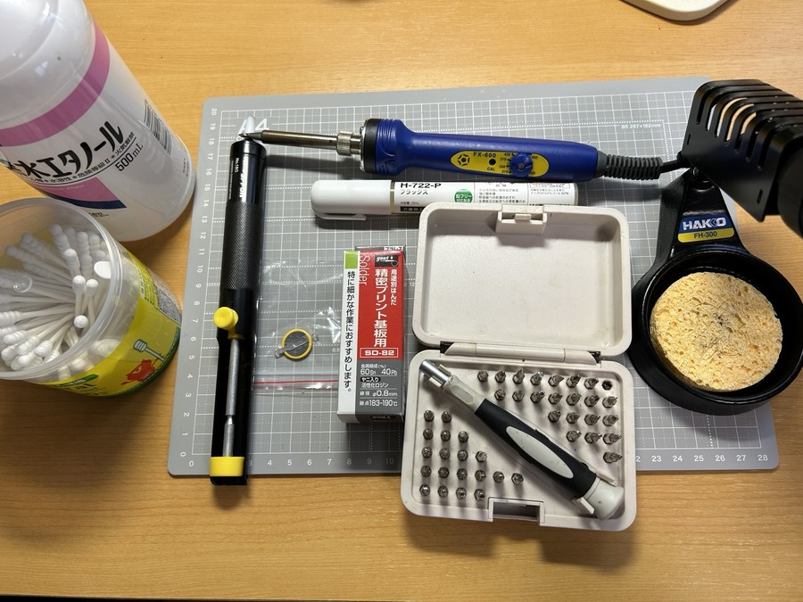
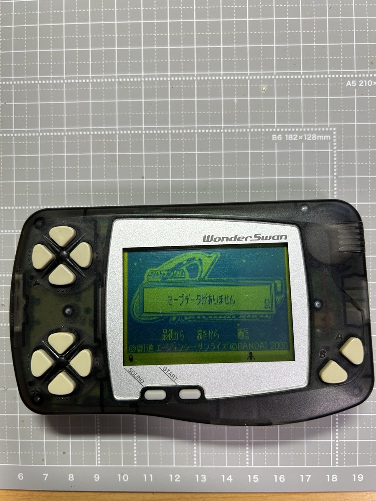
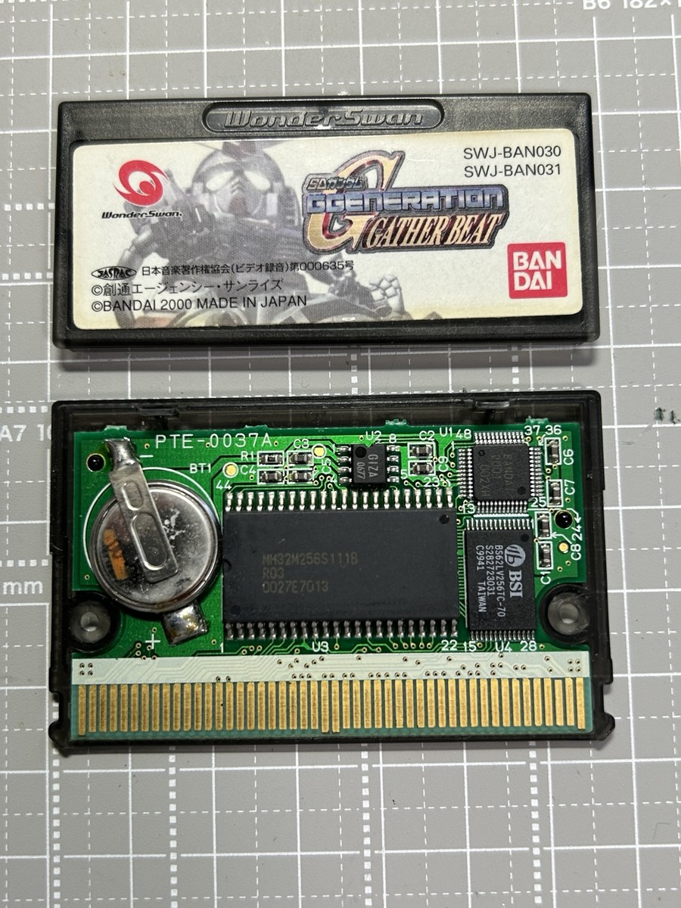
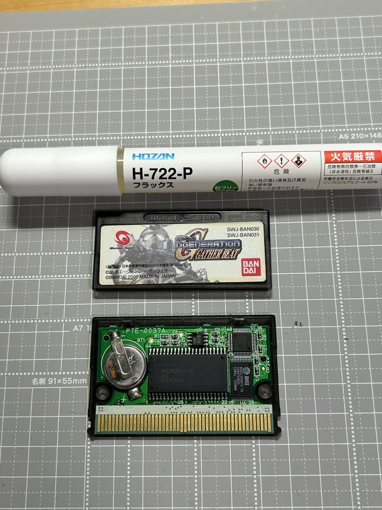
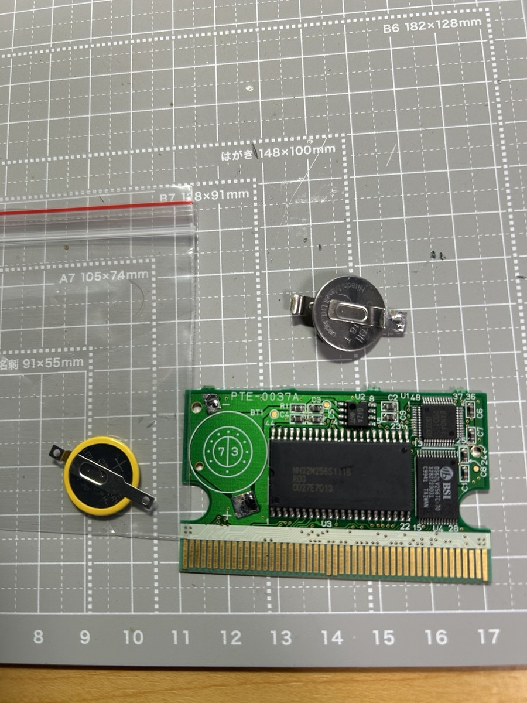
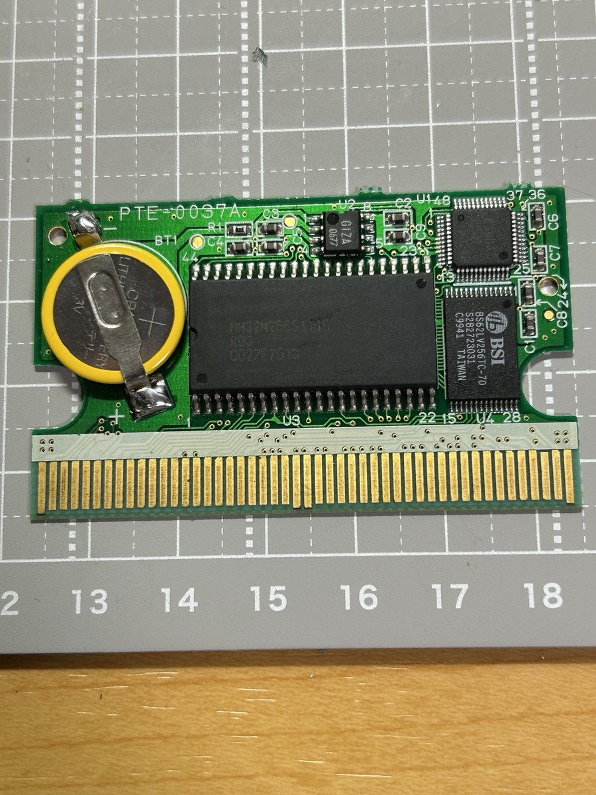
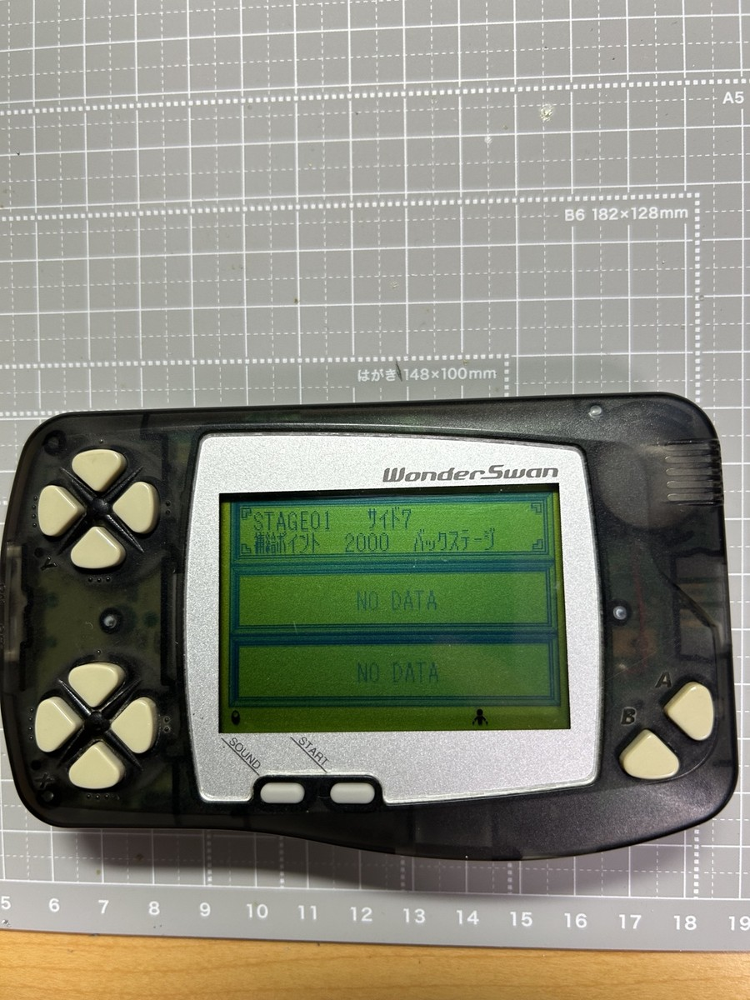

今回は、ワンダースワン用ソフト『SDガンダム GGENERATION GATHER BEAT』のバックアップ電池を交換したときの手順を記録しておきます。
前回の『仙界伝弐』の電池交換記事では、最後に「おまけ」としてこのソフトの基板を少しだけ紹介しました。『仙界伝弐』は電池ホルダー式でしたが、こちらは見慣れたタブ付きのボタン電池が使われています。

用意したもの
今回の作業で使用したものはこちらです。
- タブ付きCR1616ボタン電池
- はんだごて
- はんだ
- はんだ吸い取り器
- フラックス
- 精密ドライバー（トルクスドライバー）
清掃用に
- 無水エタノール
- 綿棒

電池切れの状態を確認
バックアップ電池が切れていると、ゲーム内でセーブしても電源を切ったあとにデータを保持できません。今回もセーブデータが残らない状態になっていたため、電池交換を行うことにしました。

カートリッジを開けて電池を確認
カートリッジを開けて基板を確認すると、左側にタブ付きのボタン電池が取り付けられています。今回は同じサイズのタブ付きCR1616へ交換します。

古い電池を取り外す
まず、古い電池のタブがはんだ付けされている部分にフラックスを塗ります。そのあと、はんだごてではんだを溶かし、ある程度はんだ吸い取り器で吸い取ってから電池を持ち上げて外しました。

はんだをすべてきれいに取り除こうとするより、タブを持ち上げられる程度まで減らしてから外す形で作業しています。基板や周辺部品を傷めないよう、無理に引っ張らないようにしました。

新しいCR1616を取り付ける
新しい電池を取り付けるときは、基板の＋表示と電池の向きを確認してから位置を合わせます。タブの場所がズレないように気をつけながら、はんだを乗せて固定しました。
取り付け後は、電池が浮いていないか、タブが基板の接点からずれていないかを確認します。両側がしっかり固定されていれば取り付け完了です。

セーブデータが残るか確認
電池交換後、ゲームを起動して新しくセーブデータを作成します。そのあと一度電源をOFFにし、再び起動してセーブデータが残っているか確認しました。

無事にセーブデータが残っていました。これでバックアップ電池の交換は完了です。
前回の『仙界伝弐』はホルダー式でハンダを使わず交換できましたが、こちらはタブ付き電池をはんだ付けする一般的なタイプでした。同じワンダースワンのソフトでも、使われているバックアップ電池の取り付け方が違うのは面白いところですね。
→ ハンダ不要のCR1616ホルダー式だった『仙界伝弐』の電池交換記録はこちら
【作品について】
本ページで扱う作品名・各種権利は、各権利者に帰属します。
『SDガンダム GGENERATION GATHER BEAT』（ワンダースワン）
©創通エージェンシー・サンライズ
©BANDAI 2000
最終更新日：2026/09/15